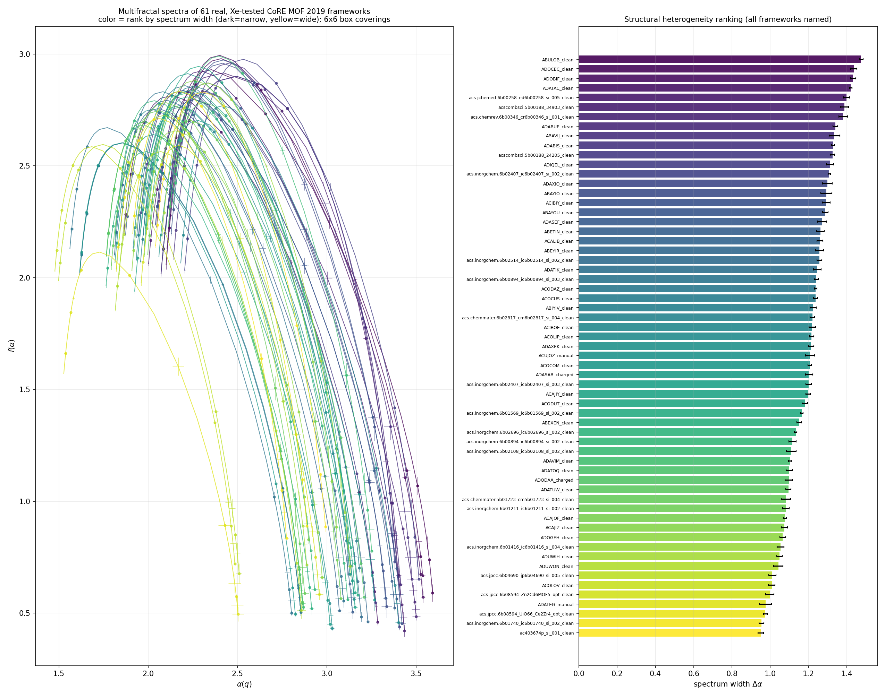

1The Paper We Built On — and Exactly What We Used From It
The network half of this project follows a published method. This section states plainly what the paper provides, which parts we used, which part we initially got wrong, and what we added.
- You know
- That graph-derived numbers can separate structures.
- This section
- States precisely which parts of the published method this project uses, which it changed, and why.
- Which lets us
- Separate our contribution from the source paper’s, which a reviewer will ask about.
What the paper gives us
Used directly, unchanged
What we initially got wrong
.cif to the block network — the object the method needs as input; (ii) supercell expansion, because a primitive cell of 7 blocks has no range of radii to fit a power law over; and (iii) the finding that iNMFA is degenerate on a defect-free crystal, since the influential blocks are symmetry-equivalent and share one growth curve. That is a genuine boundary condition on the method, not a failure of it.
2The Multifractal Spectrum — the Family Fingerprint
This is the analysis the brief actually asked for: highlight the influential nodes, compute a spectrum, and test whether frameworks of one family fall inside a common band. The spectrum here is not the Laplacian eigenvalues of Section 4 — it is the multifractal singularity spectrum f(α), obtained by covering the network with boxes of increasing radius and measuring how the box sizes seen by the influential nodes scale.
- You know
- The graph, and the published method it feeds.
- This section
- Derives the multifractal spectrum: covering the graph with boxes, counting what falls inside, and turning the counts into a curve.
- Which lets us
- Reduce an entire framework to three numbers — the point of the whole pipeline.
What had to be corrected to get a spectrum at all
The method is sound; the first implementation returned an undefined spectrum for half the test structures. Each fix below is a specific, checkable defect.
3Against the Published Method — Box-Growing
The method comes from Xiao et al., "Deciphering the generating rules and functionalities of complex networks", Scientific Reports 11, 22964 (2021). Reading it closely revealed that our implementation — and the original notebook — used the wrong underlying measure.
- You know
- The spectrum as we compute it.
- This section
- Implements the published method’s own alternative — box-growing — and compares the two on the same structures.
- Which lets us
- Show the result is a property of the framework, not of one algorithm choice.
| What the measure is | Random? | |
| box-covering (what we had) | tile the whole network with randomly-seeded boxes; a node's measure is the size of whichever box happens to cover it | yes — needs many trials |
| box-growing (the paper) | centre a box on node i and grow its radius; the measure is Mi(r), the number of nodes within distance r | no — fully deterministic |
ui(r) = Mi(r)/M · Uq(r) = Σ uiq · Uq ~ (r/d)τ(q) · α = dτ/dq · f(α) = qα − τ · generalized dimension D(q) = τ(q)/q · asymmetry A = ln[(α₀−αmin)/(αmax−α₀)] with α₀ at the maximum of f. Per the paper: width w is structural heterogeneity, α₀ is structural complexity, A>0 means frequent structures dominate ("clump"), A<0 means rare ones do ("thorn").
4Why a Parabola? What the Chart Actually Says
Every spectrum chart on this site is an inverted parabola, and almost nobody meets one of these having been told what it means. This section builds it from an idea anyone already has, then says what its width is for. No formula appears until the idea it encodes has already been described in words.
- You know
- That the pipeline outputs a curve for each framework.
- This section
- Explains what that curve is, in ordinary language, and what its width means physically.
- Which lets us
- Read every chart on this site, instead of taking the captions on trust.
Start with one number, and watch it fail
Stand on a block of the framework and walk outwards along bonds. After one step you can reach some number of blocks; after two steps, more; after three, more again. How fast that count grows is a measure of how the structure fills space — a dimension. On a line the count grows like r; on a flat sheet like r²; in a solid block like r³.
For a simple, uniform object one such number is the whole story. Frameworks are not uniform. Stand on a metal cluster in a dense region and the count explodes; stand on a linker beside a large cavity and it crawls. One exponent cannot describe the object, because different parts of the object genuinely grow at different rates.
So report the distribution instead
If one exponent will not do, describe them all. Write α for a local growth rate — the local scaling exponent — and then ask, for each possible value of α, how much of the framework grows at that rate. Call that quantity f(α). Plotting f(α) against α is the multifractal spectrum, and it is the parabola.
Why it has a peak
Most of the framework scales at some typical rate, and progressively less of it scales at rates far from that. “Most” is the apex. The exponent there, α₀, is the framework's typical local dimension, and the height of the apex is how much of the structure behaves typically.
Why it falls away on both sides
To the left sit the densest neighbourhoods, to the right the sparsest. Both are rare — a framework is not mostly its extremes — so f(α) drops away from the apex in both directions. A spectrum that did not fall away would be telling you the calculation had gone wrong, which is exactly how we caught one bug.
The one number we keep: Δα, the width
The parabola is a curve, and a curve is hard to compare across 138 frameworks. So we take its width — the distance from the leftmost to the rightmost exponent the framework exhibits — and call it Δα.
And why this could matter for the goal
Gas adsorption is not governed by average porosity alone. It depends on whether a framework offers a variety of binding environments — tight corners that hold a molecule strongly, wide channels that let it move. Two frameworks with identical surface areas can behave differently if one is uniform and the other is varied. Δα is a candidate for measuring exactly that variety.
5The Mathematics, Derived in Full
Every formula the pipeline uses, in the order it is used, with each symbol defined the moment it first appears and nothing assumed from a previous course. Where a step could reasonably be done another way, the alternative is given and the choice justified — because one of those choices was made wrongly here for months, and the difference is the difference between a spectrum and a meaningless curve.
Step 0 — the object we are measuring
Everything below operates on one object: the coarse-grained periodic graph built on the previous pages. Nothing about chemistry survives into this section. What survives is a set of vertices and the edges between them.
Notation for the graph
- G = (V, E)
- The coarse-grained graph. One vertex per building block, one edge per bond between two blocks.
- N = |V|
- The number of vertices — blocks in the supercell. Between 1 160 and 7 000 for the frameworks on this site.
- d(u, v)
- The shortest-path distance: the fewest edges you must traverse to get from vertex u to vertex v. This is the only notion of distance used from here on — not the distance in ångströms. Two blocks on opposite sides of a pore may be close in space and far apart in the graph, and it is the graph distance that describes how the framework is connected.
- D
- The diameter: the largest shortest-path distance between any two vertices, maxu,v d(u, v). It sets the scale against which all box radii are measured.
Step 1 — which vertices carry the measure
The published method does not treat every vertex equally. It works with the influential vertices: the fraction of the graph that is most central. Two quantities decide which those are.
New symbols
- deg(v)
- Degree — how many neighbours a block has. For a metal node this is its coordination number; UiO-66's zirconium cluster has degree 12.
- C(v)
- Closeness centrality — the reciprocal of the mean distance from v to everything else. Large when a vertex sits near the middle of the graph, small when it sits at the edge. The N − 1 in the numerator makes it comparable between graphs of different size.
- I
- The influential set: the top φN vertices ranked by degree first and closeness as a tie-break, with φ = 0.1. So |I| is the top 10% of vertices.
Step 2 — covering the graph with boxes
A box of radius r centred on a vertex c is the set of vertices within r steps of it. To cover the graph we repeatedly pick an uncovered vertex at random, take every still-uncovered vertex within r steps, and call that a box — until nothing is left uncovered.
This is a greedy random covering: the boxes are disjoint by construction, and every vertex ends up in exactly one. Because the centres are chosen at random, two runs give different coverings, which matters in Step 6.
New symbols
- r
- The box radius, in graph steps. Runs from 1 up to rmax.
- rmax
- The largest radius used, set to wD with the window fraction w = 0.35. Beyond roughly a third of the diameter a single box swallows the whole graph and there is nothing left to measure.
- nb(r)
- The size of the box that a given vertex ended up in — how many vertices it contains.
Step 3 — turning box sizes into a probability measure
Each influential vertex inherits the size of the box that covers it. Normalising those sizes across the influential set turns them into probabilities — a measure spread over the framework, which is the object multifractal analysis actually operates on.
New symbols
- pi(r)
- The share of the total covered mass sitting in influential vertex i's box. By construction pi > 0 and Σpi = 1.
What this quantity means physically. A large pi says vertex i sits in a densely connected neighbourhood — many blocks reachable within r steps. A small one says it sits somewhere sparse, next to a cavity. The distribution of the pi across the framework is the structural heterogeneity we are trying to quantify.
Step 4 — the partition function, and what q is for
Now the central trick. Raise every probability to a power q and add them up.
New symbols
- q
- The moment order, a knob we sweep from −10 to +10 in steps of 0.5 (41 values).
- Pq(r)
- The partition function — the name is borrowed from statistical mechanics, where the same construction appears.
Step 5 — the mass exponent τ(q), and the mistake that cost us months
If the framework is scale-invariant, the partition function follows a power law in the box radius:
Take logarithms of both sides and the power law becomes a straight line:
New symbols
- rN
- The normalising radius, taken as the graph diameter D. Since r ≤ rmax < D, the ratio r/rN is always less than 1, so ln(r/rN) is always negative. Remember this — it decides the sign of everything downstream.
- τ(q)
- The mass exponent. One number per value of q: the rate at which that density regime's contribution grows as the boxes grow.
Equation (7) has no intercept. That is not an oversight, it is the content of equation (6): a pure power law with no prefactor passes through the origin in log–log coordinates. So τ(q) must be fitted as a least-squares line through the origin:
Through the origin, the same flat line gives τ(0) = ln|I| / ln(r/rN) — a positive number divided by a negative one, so τ(0) < 0, and f(α0) = −τ(0) > 0. The peak reappears. This one line of arithmetic is the difference between 0 of 77 valid spectra and 77 of 77, and it is panel (a) of the real-MOF figure.
Step 6 — the Legendre transform to α and f(α)
τ(q) is correct but unreadable: it is indexed by the artificial knob q rather than by anything physical. The Legendre transform re-expresses the same information in terms of the scaling exponent itself.
New symbols
- α(q)
- The singularity strength, or local scaling exponent: the growth rate exhibited by the regions that the moment order q selects. Computed numerically as the gradient of τ along the q grid.
- f(α)
- The singularity spectrum: the fractal dimension of the subset of the framework whose local scaling exponent is α. Loosely, how much of the structure grows at that rate.
Why a transform, and why this one. τ(q) is convex, and a convex function can be described either by its value at each q or by the family of tangent lines that touch it. The Legendre transform swaps one description for the other: α is the slope of the tangent, and f is minus its intercept. Nothing is lost and nothing is added — the same content, re-indexed by a quantity with a physical meaning. It is the same transform that converts energy to entropy in thermodynamics, which is not a coincidence: equation (5) is a partition function.
Step 7 — the three numbers we keep
The curve f(α) is the full answer, and it is too big to compare across 138 frameworks. Three summary numbers are extracted.
The descriptor
- Δα
- Spectrum width. How varied the local environments are. Narrow = one environment repeated; wide = tight and open regions coexisting in one crystal. This is the number the band is built from.
- α0
- The dominant exponent. The scaling behaviour of the typical part of the framework — where the spectrum peaks.
- A
- Asymmetry. Positive means the right branch is longer, so the framework's character is set by its sparse regions; negative means the dense regions dominate. Every framework measured here, hypothetical and synthesised alike, comes out at roughly −1.31 — strongly left-leaning.
Step 8 — the uncertainty, which is not optional
The covering in Step 2 is random, so Δα is a random variable. Reporting a single value from a single covering would be reporting noise. The whole calculation is therefore repeated over independent coverings and both the mean and the scatter are kept.
New symbols
- B
- The number of independent batches of coverings, B = 6, each averaging 6 random trials.
- s
- The standard deviation across batches — the error bar on every point in the band charts. Typically 0.016, which is about 1.3% of Δα.
A note on R², since the numbers look alarming
The fit quality reported per framework includes strongly negative R² at negative q — a median around −13. That is not a broken fit. The conventional R² formula compares a model against the mean of the data, and a through-origin fit is not trying to beat the mean; it is constrained to pass through a fixed point. Negative values are therefore expected and carry no information about fit quality here. The check that does matter is the shape test — whether f(α) is concave with its apex at q = 0 — and that is passed by 138 of 138 frameworks. The same signature appears in both datasets, which is what confirms it is a property of the estimator rather than of the data.
6Sixty-One Real Frameworks, Every Spectrum Drawn
This is the raw output of the pipeline on experimentally synthesised MOFs — not a summary, not a schematic: one curve per framework, exactly as computed.
- You know
- What a spectrum means and why it is a parabola.
- This section
- Shows all 61 real spectra as computed, unsummarised, with every framework named.
- Which lets us
- Check the summary statistics against the raw output they came from.

Right — the same 61, ranked and named. Every framework is labelled with its CSD refcode, so any curve on the left can be traced to a specific published crystal structure. The spread from top to bottom is 0.95 to 1.47 — the width of the band.
Generated by
3_notebooks/real_mof_band.ipynb, step 9.